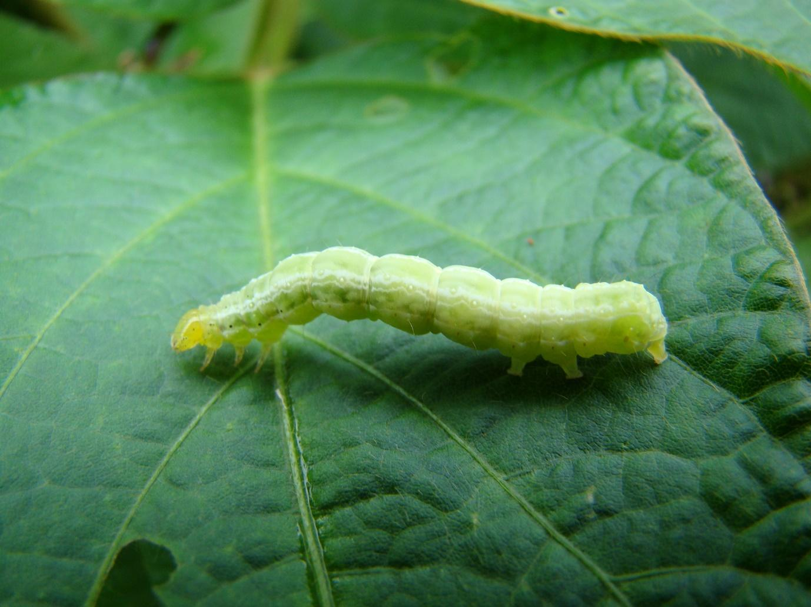

-Photoroom.png)

A lagarta-da-soja é uma potente desfolhadora da cultura. Inicia o seu ataque no topo da parte aérea das plantas de soja, podendo persistir até a fase de enchimento dos grãos.
Pode apresentar até quatro gerações durante a safra. Seu ciclo biológico dura cerca de 30 dias.
Pode se alimentar de folhas, flores ou até mesmo de vagens. Quando o ataque é muito intenso, as lagartas assumem coloração preta com listras brancas. Essa modificação fisiológica do inseto é causada pela competição por alimento.